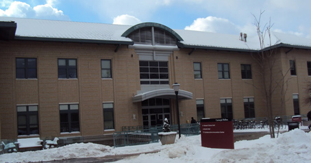

About the HCII
The Human-Computer Interaction Institute (HCII) is an interdisciplinary community of students and faculty at Carnegie Mellon University (CMU). This community is dedicated to research and education in topics related to computer technology in support of human activity and society. Although the HCII is headquartered within the School of Computer Science, members of the community represent a broad spectrum of the CMU campus including the College of Humanities and Social Sciences, Tepper School of Business, College of Fine Arts, Carnegie Institute of Technology, Software Engineering Institute, as well as the School of Computer Science. Collaborators and sponsors are from other universities in Pittsburgh and around the world, small startup companies, and multi-national corporations.
History
The idea for a Human-Computer Interaction Institute at CMU can be traced back to 1967, with the founding of the computer science program here. Founders Allen Newell, Herbert A. Simon, and Alan J. Perlis believed that the new discipline of computer science should include the study of phenomena surrounding computers, not just the theory and design of computation devices themselves (Letter to Science, vol. 157, no. 3795, 9/22/67, pp. 1373-1374).
In 1985, Bonnie John opened the first user studies laboratories for faculty and student use. Originally built to observe and record individual users of the ZOG system (an early hypermedia system), the labs are now used for training in usability analysis and for a large range of studies in human-computer interaction. In 1993, Bonnie John offered the first CMU course in Human-Computer Interaction. Soon after, a committee drawing on faculty across the campus founded the Institute.
By 2000, the CMU faculty/staff directory listed over 60 faculty, staff, and post-doctoral researchers with the HCII. HCII research and educational programs span a full cycle of knowledge creation. The cycle includes research on how people work, play, and communicate within groups, organizations, and social structures. It includes the design, creation, and evaluation of technologies and tools to support human and social activities. The HCII has a record of evaluating and monitoring the immediate and longer-term usability and social aspects of new technologies and tools. This work informs new technologies and tools. We believe in collaboration.
Research
Our research projects range from an individual company working with a small group of students to multi-company consortia seeking multi-national solutions. Working with internationally known researchers in a variety of disciplines generates novel and exciting projects. We hope you will explore the products of this unique culture and continue to grow our collaborative community.